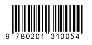

이러한 제품 포장에 인쇄 된 것과 같은 전통적인 바코드는도 1 차원 바코드로 알려져 있습니다. UPC 및 EAN 등 일반적으로 사용되는 여러 종류가 있습니다. 대부분은 다음과 유사 :

이 1D 바코드는 일반적으로 CD 나 책 같은 제품을 설명하는 고유 한 코드가 포함되어 있습니다. 당신은 가격, 리뷰 등을 찾아 인터넷에서이 코드를 찾아 볼 수 있습니다.
당신은 책을 스캔 할 경우, 당신은 또한 단어 나 문구에 대한 책의 내용을 검색하고 표시 모든 페이지를 찾을 수 있습니다 :
Google 번역을 통해 번역.